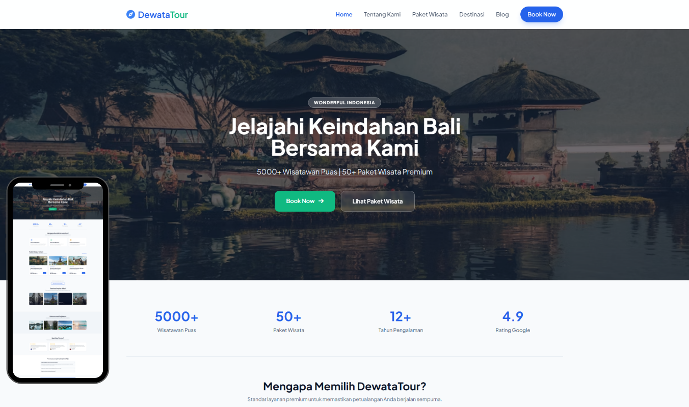
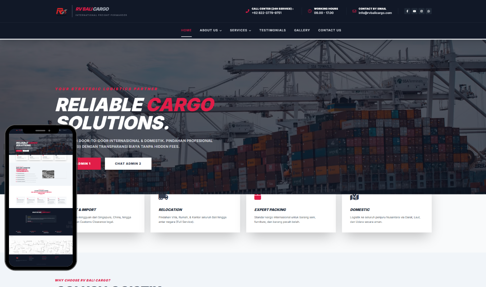
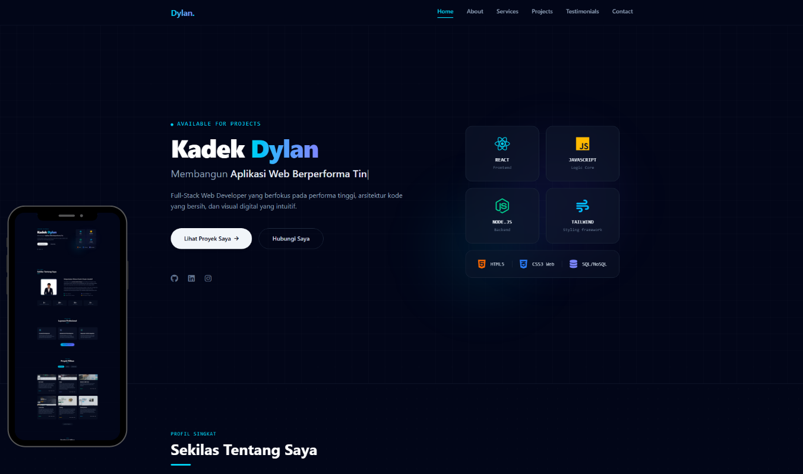
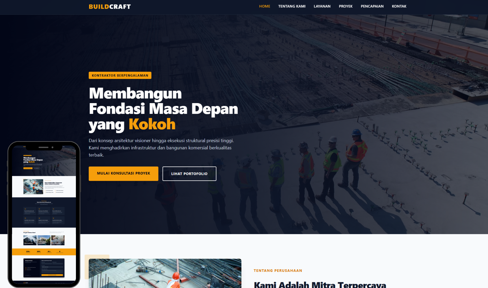

Studi Kasus
Proyek Pilihan

Tour Travel
Website perusahaan tour & travel dengan fitur booking online, katalog layanan wisata, informasi destinasi, galeri dokumentasi perjalanan, testimoni pelanggan, serta dashboard pengelolaan reservasi yang mendukung operasional bisnis secara efisien.

Cargo
Website company profile perusahaan cargo ekspor impor yang dirancang untuk menampilkan layanan logistik internasional, jaringan pengiriman global, pelacakan pengiriman, serta informasi operasional secara profesional guna mendukung kepercayaan dan kebutuhan bisnis pelanggan.

Personal Portofolio
Website personal portfolio profesional untuk menampilkan pengalaman, keterampilan, proyek unggulan, dan pencapaian dalam satu platform digital yang modern dan responsif.

Construction
Landing page perusahaan konstruksi modern yang menampilkan layanan pembangunan, renovasi, dan konsultasi proyek. Dibangun dengan fokus pada performa, desain profesional, dan optimasi SEO untuk meningkatkan kredibilitas bisnis secara online.

Catering
Landing page profesional untuk layanan catering yang dirancang untuk menampilkan menu unggulan, paket layanan, dan informasi pemesanan secara efektif. Mengutamakan pengalaman pengguna yang nyaman dengan desain modern, responsif, dan performa optimal.

Cleaning Service
Halaman konseptual interaktif berkinerja tinggi untuk mempromosikan layanan cleaning service profesional, dengan fokus pada kemudahan akses informasi, pemesanan layanan, dan peningkatan kepercayaan pelanggan.